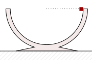
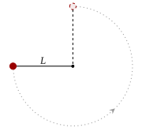
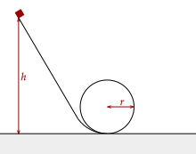
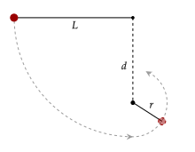
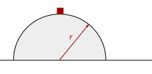
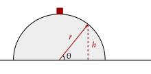

Previously, we used the work-energy theorem and solved problems where dynamics and kinematics are impractical to use. Now, let's use the (admittedly incomplete) conservation of mechanical energy to solve more complicated problems.
It's important to note two things, however; first, we should be sure to follow the coordinate system and respect the initial position and potential energy that we set. For example, if an object goes below the initial position, we set it as negative.
Further, we should be careful that all the forces acting on the object are conservative; here, we will only deal with the work by weight. We also note that gravitational potential energy, which we derived last time.
Once again, we have the freedom to choose the initial potential energy and position. We should make sure to state this at the beginning of any problems we have.
Exercise 1
(HRK E12.7) A very small ice cube is released from the edge of a hemispherical frictionless bowl whose radius is 23.6 cm. How fast is the cube moving at the bottom of the bowl?

Solution
Neglecting friction, the only force acting on the ice cube is weight; thus, mechanical energy is conserved. We write it out, letting the initial position be at the rim of the bowl. Thus, the bottom is just a radius down from the rim.
We set initial potential energy is zero, and the initial kinetic energy drops out. Thus, the entire initial side is zero. We break the final kinetic and potential energy, and solve for the speed.
Now, plug in values. With our coordinate system, the vertical position is below the initial position, so we set it as negative. Note also to convert centimeters to meters.
Exercise 2
(HRK P12.2) A ball of mass is attached to the end of a very light rod of length . The other end of the rod is pivoted so that the ball can move in a vertical circle.

The rod is pulled aside to the horizontal and given a downward push as shown below so that the rod swings down and just reaches the vertically upward position. What initial speed was imparted to the ball?
Solution
Notice that the ball "just reaches" the vertically upward position. This means that the speed at the top must be zero, as it has lost all its speed going up. Thus, we write out the conservation of mechanical energy, noting that the net work is done by weight.
We set initial potential energy as zero, and the final kinetic energy drops out. Thus, the entire initial side is zero. We break the final kinetic and potential energy, and solve for the speed.
With our coordinate system, the vertical position is above the initial position, so we set it as position. Thus, the equation for the speed is as follows.
One thing to notice is that while these problems involve circular motion, there is one caveat; the speed of the object is not constant. Thus, the centripetal acceleration and indirectly the force isn't constant either. Thankfully, the conservation of energy helps us solve these problems.
Still, some lessons that we learned from kinematics and dynamics are useful to apply here. After all, physics is most powerful when we combine the knowledge we attained from multiple sources.
Exercise 3a
(HRK P12.5b) A small block of mass slides along the frictionless loop-the-loop track shown below. At what height above the bottom of the loop should the block be released from rest so that it is on the verge of losing contact with the track at the top of the loop?

Solution
The only force acting on the block is weight, so mechanical energy is conserved. Further, since it is "on the verge of losing contact", that means that it is moving at the minimum speed possible. Consequently, it means that the centripetal acceleration is at its minimum, and ultimately the centripetal force is at its minimum.
The minimum centripetal force is when only the weight of the object acts on it (higher speeds would mean that the normal force helps). Thus, we solve for the speed given these conditions.
We keep it squared since it'll appear squared in the conservation of energy equation anyway. Now, let's set the coordinate system such that the initial position is at the ground, and let's set the initial potential energy as zero. We write out the conservation of energy, dropping out the initial kinetic energy.
The final height is just twice the radius, so we substitute that in.
Exercise 3b
(HRK P12.5b) The string below has a length , and the distance to a fixed peg. When the ball is released from rest in the position shown, it will follow the arc shown in the figure.

Show that, if the ball is to swing completely around the fixed peg, then .
Solution
We define a new variable corresponding to the radius of the circle that the ball passes through after the string gets stuck. We can solve it as following.
Once again, to keep the ball swinging completely around, the minimum centripetal force required is the weight. If it goes faster, the tension will help.
Let's keep this in mind. Now, from conservation of energy (given that the only force is weight), we set the initial position to be at the very bottom position that the ball will pass through. The position we are interested in is the very top that the ball will reach after snagging on the peg. The initial kinetic energy drops out, leaving us with this expression.
We solve for the speed squared, then we plan to substitute this back in above.
Substituting in, we have this.
Notice here that we factored out so that we can solve for the distance from the peg, since thats what we want.
Exercise 4
(HRK P12.5b) A small block is placed on the top of a hemispherical mound of ice. It is given a very small push and starts sliding down the ice.

Show that it leaves the ice at a point whose height is if the ice is frictionless. What centripetal force acts on the object?
Solution
We define two new variables; one being the angle θ, and also the height. This looks similar to an inclined plane; in fact, we can treat it like that it is an inclined plane, just with the components vary by the angle.

The centripetal force acting on the object is the normal force (which we set as negative, pointing away from the center) and a component of the weight. This component is perpendicular to the surface of the hemisphere.
Recall that the normal force will disappear as the object leaves the surface; this is just a fact of the normal force that we discussed. Thus, dropping that, we have this equation.
We keep it like that. Now, from conservation of energy, we have the following; we set the initial position at the ground, and thus everything is measured based on the height from that. We want the height where the above holds true. We set the initial potential as zero.
Now, notice that is the vertical position.